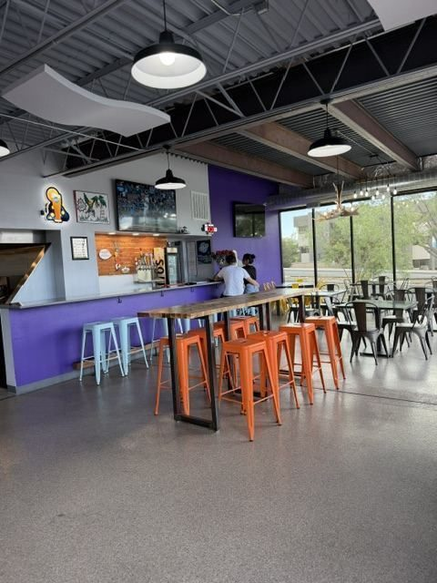
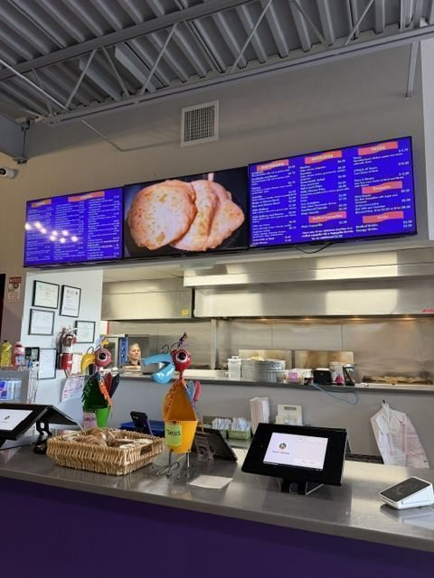

Mexican Food Near the Albuquerque Airport
Family-owned in Albuquerque since 1982. The Yale Blvd location is 1.2 miles from the Sunport — order at the counter, eat in the dining room, or take it with you.
The Food
Half-Pound Burritos and Chile That Means It
Perico's is a straightforward, high-volume New Mexican counter — the kind of place locals send visitors when they ask where to get "real" food. Expect burritos built heavy, tacos ordered by the six-pack, and stuffed sopapillas that come out of the fryer light and land on the plate under chile.
What people actually order here: the shredded beef tacos, the chicharrón burrito, the chile relleno burrito, and a sopapilla to finish. Dine-in, takeout or delivery.
The Yale Blvd location sits inside Yale Landing, so you can park once, eat here, and walk next door for a paleta or a beer afterward.


The Menu
Good for a Layover
If you're flying out of the Sunport, Yale Blvd is on your way in. Order ahead for pickup, eat before you return the rental car, and skip whatever the terminal is charging for a breakfast burrito. Catering is available if you're feeding a crew, a conference, or a hangar full of people.
Also at Yale Landing: Paletería Cuauhtémoc for paletas and aguas frescas, and FMV Brewing Co. for New Mexico beer on tap — both in the same building.
Nearby
More to Eat and Drink at Yale Landing
Everything is in the same building at 2500 Yale Blvd SE, 1.2 miles from the Albuquerque Sunport.